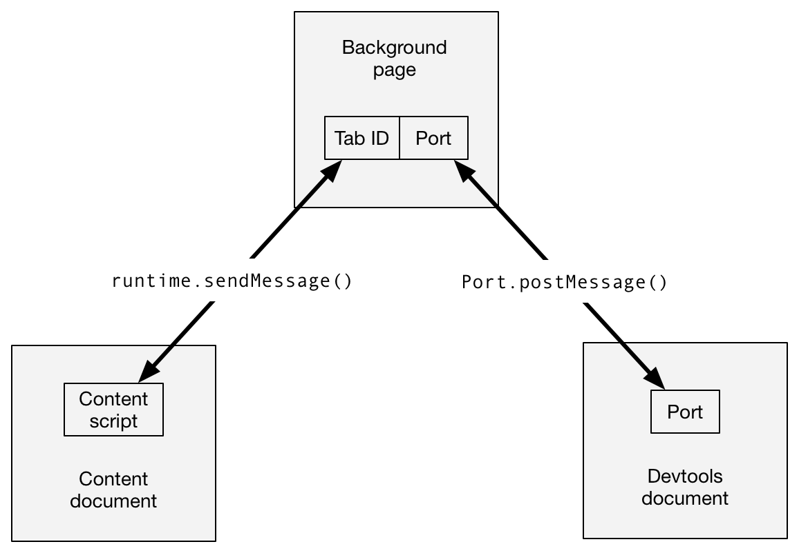

This page describes devtools APIs as they exist in Firefox 55. Although the APIs are based on the Chrome devtools APIs, there are still many features that are not yet implemented in Firefox, and therefore are not documented here. To see which features are currently missing please see Limitations of the devtools APIs.
You can use WebExtensions APIs to extend the browser's built-in developer tools. To create a devtools extension, include the "devtools_page" key in manifest.json:
"devtools_page": "devtools/devtools-page.html"
The value of this key is a URL pointing to an HTML file that's been bundled with your extension. The URL should be relative to the manifest.json file itself.
The HTML file defines a special page in the extension, called the devtools page.
The devtools page is loaded when the browser devtools are opened, and unloaded when it is closed. Note that because the devtools window is associated with a single tab, it's quite possible for more than one devtools window - hence more than one devtools page - to exist at the same time.
The devtools page doesn't have any visible DOM, but can include JavaScript sources using <script> tags. The sources must be bundled with the extension itself. The sources get access to:
window objectNote that the devtools page does not get access to any other WebExtension APIs, and the background page doesn't get access to the devtools APIs. Instead, the devtools page and the background page must communicate using the runtime messaging APIs. Here's an example:
<!DOCTYPE html> <html> <head> <meta charset="utf-8"> </head> <body> <script src="devtools.js"></script> </body> </html>
The devtools.js file will hold the actual code creating your dev tools extensions.
The devtools window hosts a number of separate tools - the JavaScript Debugger, Network Monitor, and so on. A row of tabs across the top lets the user switch between the different tools. The window hosting each tool's user interface is called a "panel".
Using the devtools.panels.create() API, you can create your own panel in the devtools window:
browser.devtools.panels.create(
"My Panel", // title
"icons/star.png", // icon
"devtools/panel/panel.html" // content
).then((newPanel) => {
newPanel.onShown.addListener(initialisePanel);
newPanel.onHidden.addListener(unInitialisePanel);
});
This takes three mandatory arguments: the panel's title, icon, and content. It returns a Promise which resolves to a devtools.panels.ExtensionPanel object representing the new panel.
The developer tools are always attached to a particular browser tab. This is referred to as the "target" for the developer tools, or the "inspected window". You can interact with the inspected window using the devtools.inspectedWindow API.
The devtools.inspectedWindow.eval() provides one way to run code in the inspected window.
This is somewhat like using {{WebExtAPIRef("tabs.executeScript()")}} to inject a content script, but with one important difference:
devtools.inspectedWindow.eval() do not get a "clean view of the DOM": that is, they can see changes to the page made by page scripts.Note that a clean view of the DOM is a security feature, intended to help prevent hostile pages from tricking extensions by redefining the behavior of native DOM functions. This means you need to be very careful using eval(), and should use a normal content script if you can.
Scripts loaded using devtools.inspectedWindow.eval() also don't see any JavaScript variables defined by content scripts.
A devtools document doesn't have direct access to {{WebExtAPIRef("tabs.executeScript()")}}, so if you need to inject a content script, the devtools document must send a message to the background script asking it to inject the script. The devtools.inspectedWindow.tabId provides the ID of the target tab: the devtools document can pass this to the background script, and the background script can in turn pass it into {{WebExtAPIRef("tabs.executeScript()")}}:
// devtools-panel.js
const scriptToAttach = "document.body.innerHTML = 'Hi from the devtools';";
window.addEventListener("click", () => {
browser.runtime.sendMessage({
tabId: browser.devtools.inspectedWindow.tabId,
script: scriptToAttach
});
});
// background.js
function handleMessage(request, sender, sendResponse) {
browser.tabs.executeScript(request.tabId, {
code: request.script
});
}
browser.runtime.onMessage.addListener(handleMessage);
If you need to exchange messages between the content scripts running in the target window and a devtools document, it's a good idea to use the {{WebExtAPIRef("runtime.connect()")}} and {{WebExtAPIRef("runtime.onConnect")}} to set up a connection between the background page and the devtools document. The background page can then maintain a mapping between tab IDs and {{WebExtAPIRef("runtime.Port")}} objects, and use this to route messages between the two scopes.

These APIs are based on the Chrome devtools APIs, but many features are still missing, compared with Chrome. This section lists the features that are still not implemented, as of Firefox 54. Note that the devtools APIs are under active development and we expect to add support for most of them in future releases.
The following are not supported:
inspectedWindow.getResources()inspectedWindow.onResourceAddedinspectedWindow.onResourceContentCommittedNone of the options to inspectedWindow.eval() are supported.
Scripts injected using inspectedWindow.eval() can't use all the Console's command-line helper functions, but $0 and inspect(...) are both supported (starting from Firefox 55).
The following are not supported:
panels.elementspanels.sourcespanels.setOpenResourceHandler()panels.openResource()panels.ExtensionPanel.createStatusBarButton()panels.Buttonpanels.ElementsPanelpanels.SourcesPanelThe webextensions-examples repo on GitHub, contains several examples of extensions that use devtools panels:
devtools-panels use devtools panels: